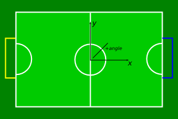

RoboJackets - RoboCup
Project Overview
This is basic documentation for the RoboCup project. It is meant as a guide in
understanding the code and how to use the various components. Major implementation
level details are left out and only a broad overview and certain important specifics
are covered.
Terms
- Standard Unit
- Distance units are always in meters. Angle units are always in degrees.
Time units are always in seconds (unless otherwise noted).
- Team Space
- Team centric coordinate system. Used by a process running only for one team.

- World Space
- Team independent coordinate system. Used internally by vision.

Directories
- Comm
- Radio communication code. Software to hardware interface host side.
- Motion
- Position and Orientation control for a team of robots.
- common
- Contains code used by several applications:
- Geometry: geometry library for points, segments, circles, etc...
- Packet: packet IO for inter-process communication
- Referee
- Convert SSL League ref commands to team centric commands.
- vision
- does something cool
- stp
- very scary STD
Usage
OS
In order to be able to compile and run any system processes you will need to have a
linux system (Ubuntu based systems are recommended). You will also need to install the
following packages:
- cmake
- g++
- libqt4-dev
- libode-dev
- libavformat-dev
- freeglut-dev
- libboost-dev
- libeigen-dev
- libswscale-dev
- cantlr
- libantlr-dev
- qt4-designer
For firmware:
- Stuff in arm_build.txt
- Xilinx WebPACK, with instructions in xilinx_on_64bit.txt
- libusb-dev
- libftdi-dev
- gcc-avr
- avr-libc
- verilog
- gtkwave
You will also need to download and install
libdc1394-2.0 for
the vision application.
Compiling
To compile any particular application, navigate to the bin directory that application's
directory and run the cmake command specifying the CMakeLists.txt file in the main directory.
I.E. :.../bin$ cmake ..
This will create the nessesary make file for that project. From there, just run make and
the application will be built.
Running
Most applications have the same name as their parent directory. Most (except vision and comm)
also require a -b or -y flag to indicate the team that process is controlling.
Running the Simulator
The simulator is found in SoccSim and provides a simulated environment for testing and for manually controlling the robots. In order to get it up and running, run SoccSim along with Motion. Motion will assume that you are using a USB controller but if you are not it will still work just fine. Control can also be done using ManualControl. The command structure is documented below:
- goto: Takes in an x and y coordinate. Commands the robot to a position relative to its team's coordinate system
- rid: Takes in a number 0-4 that corresponds to the robot's ID. Control switches to the robot whose ID was passed to rid
- angle: Takes in an angle relative to the robots frame of reference and commands the robot to that angle
- help: Provides help
- exit: Closes ManualControl